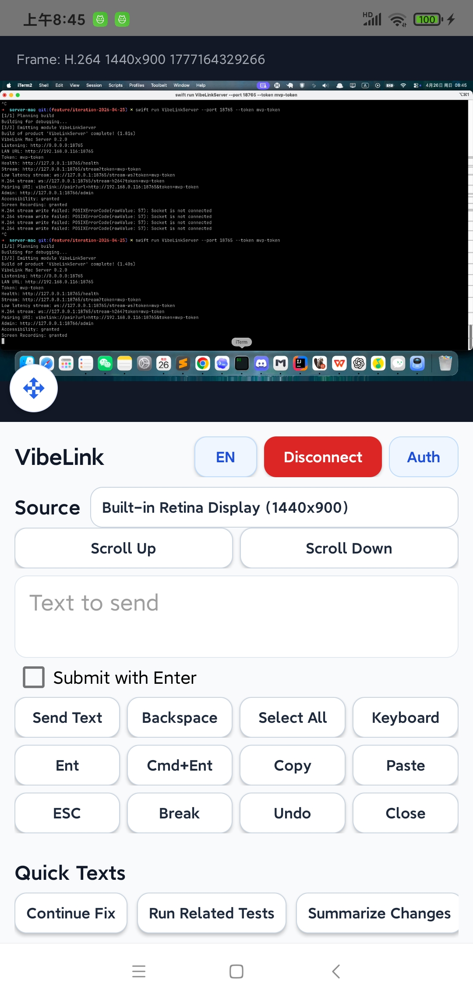
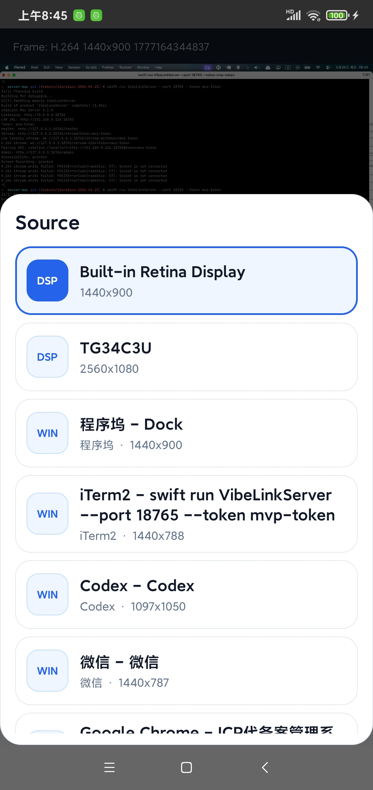
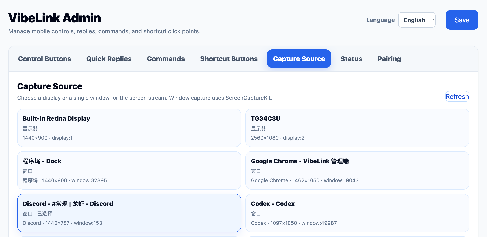
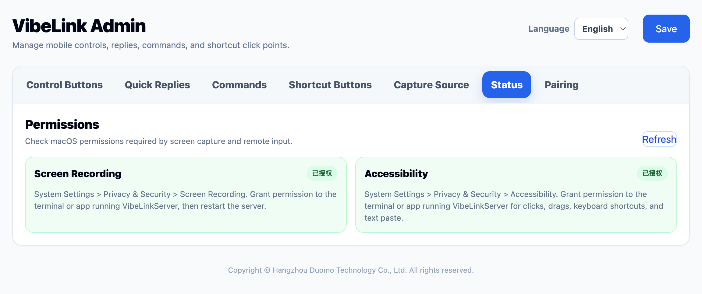
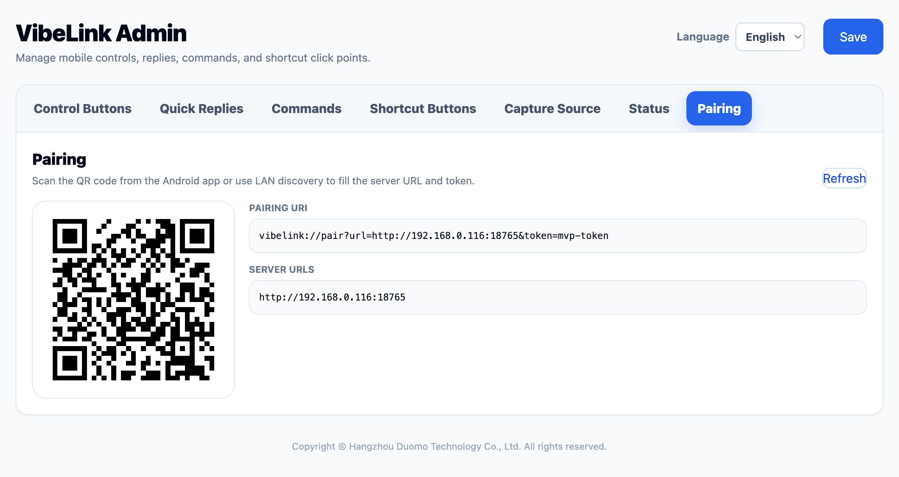
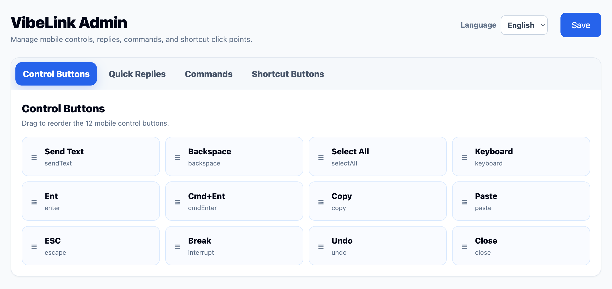
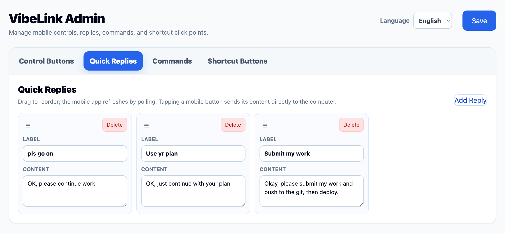
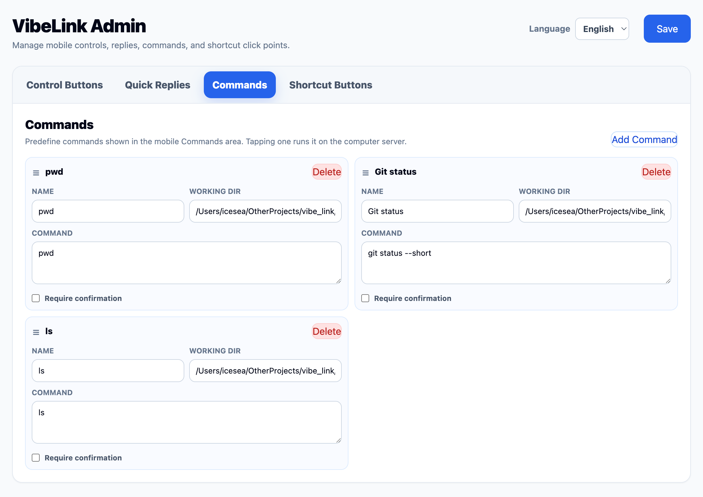
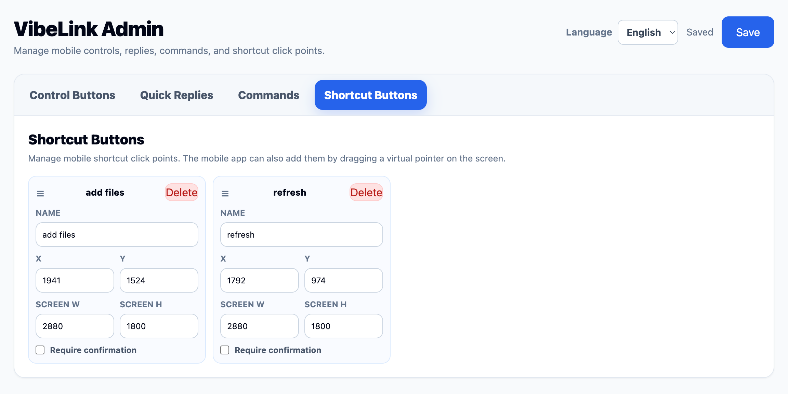

Live Mac stream
H.264 streaming for full displays or single windows, with zooming, panning, source switching, and fallback streams.
Mac remote development, built for your phone
VibeLink turns an Android phone into a focused remote development console for your Mac: live screen, precise pointer control, quick prompts, command presets, and shortcut clicks.

Purpose-built middle ground
Modern AI-assisted development often needs short, high-leverage interventions: check the screen, paste a better prompt, click a confirmation, run tests, and let the agent continue. VibeLink is designed around that loop.
H.264 streaming for full displays or single windows, with zooming, panning, source switching, and fallback streams.
Send text, paste prompts, trigger keyboard actions, scroll, drag, right click, and use a phone keyboard bridge.
Manage quick replies, preset commands, control buttons, and saved shortcut click points from the admin console.
The Android APK is about 1.2MB, keeping the phone side fast to download, install, and update.
Phone-native control surface
The client keeps the stream visible while surfacing the actions that matter: source switching, quick text, command execution, shortcut points, scroll controls, and precise pointer modes.








Category comparison
The loop
VibeLink supports the rhythm of AI-assisted development: keep an eye on progress, give a targeted instruction, run a trusted preset, click through a blocked prompt, and return to whatever you were doing.
Stream a full display or a selected window and inspect IDEs, browsers, terminals, or dialogs.
Paste a prompt, trigger a shortcut, or control the pointer with phone-friendly modes.
Execute configured commands and read status without exposing arbitrary shell input.
Step away again while the Mac keeps building, testing, or running the agent.
Designed for
AI coding users running Codex, Cursor, Claude Code, Gemini CLI, Aider, or similar tools on a Mac.
macOS developers who need occasional GUI control for browser previews, local servers, permission prompts, or terminal confirmations.
Privacy-conscious builders who prefer LAN-first or private-network access over generic third-party remote desktop routing.
Explore the source, run the MVP, and adapt the phone-first controller to your own development workflow.
Download from GitHub Releases